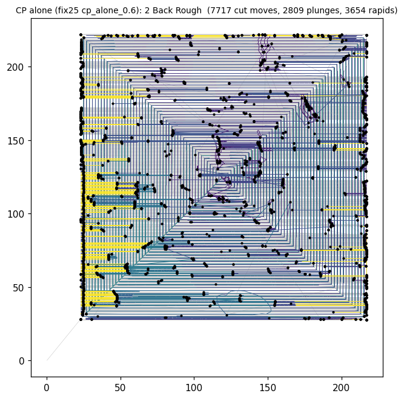
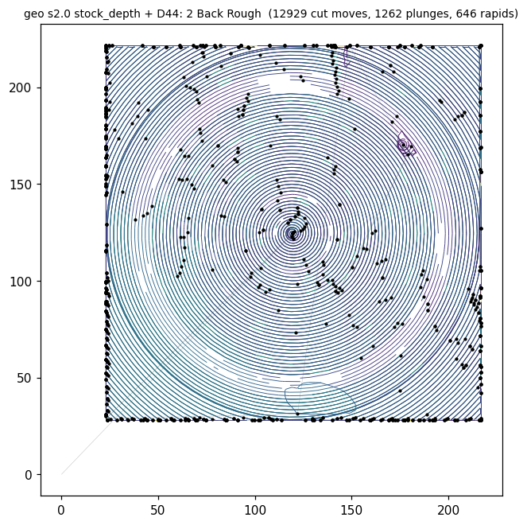
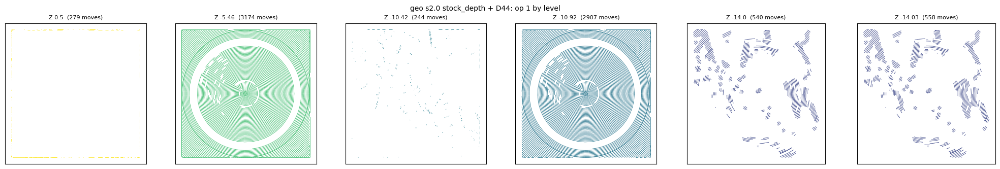
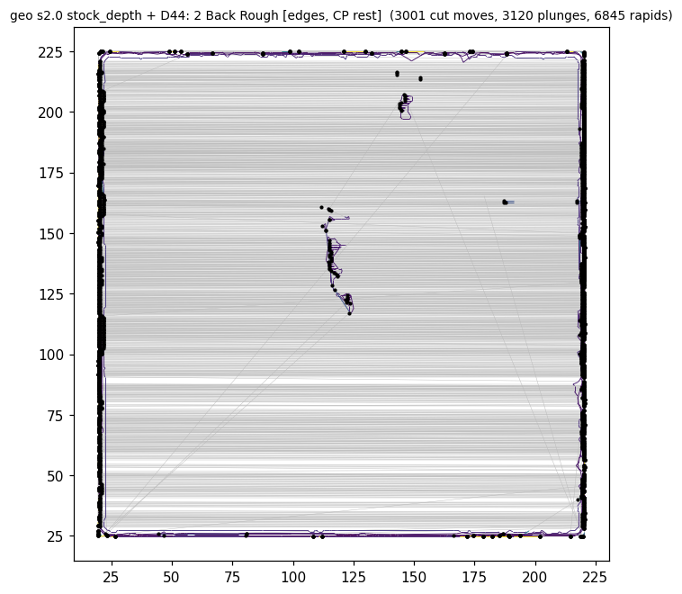
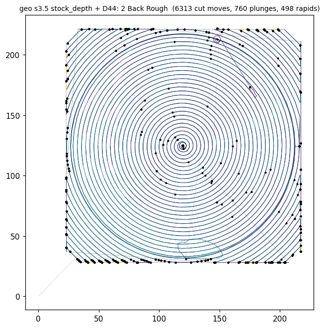
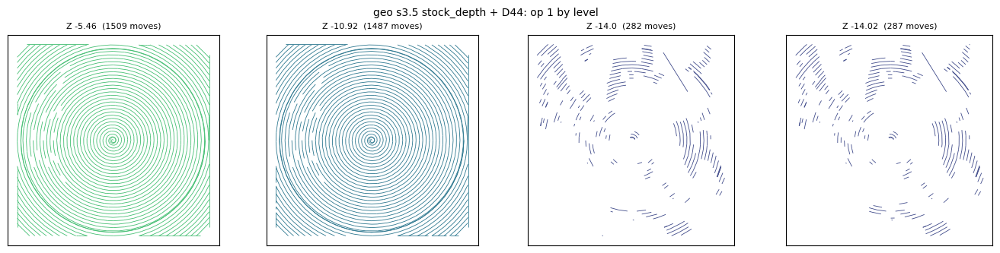
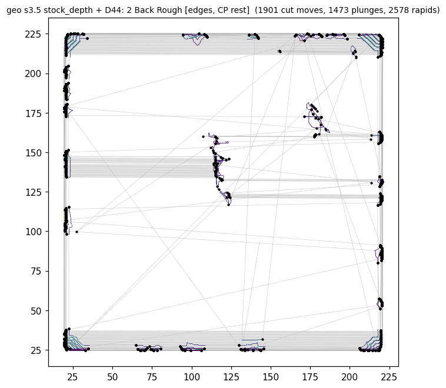

D47 toolpath renders (wanaka200, from program.nc; colour = Z, black dot = plunge, grey = rapid)
CP alone (fix25 cp_alone_0.6): 2 Back Rough

CP alone (fix25 cp_alone_0.6): op 1 by level

geo s2.0 stock_depth + D44: 2 Back Rough

geo s2.0 stock_depth + D44: op 1 by level

geo s2.0 stock_depth + D44: 2 Back Rough [edges, CP rest]

geo s3.5 stock_depth + D44: 2 Back Rough

geo s3.5 stock_depth + D44: op 1 by level

geo s3.5 stock_depth + D44: 2 Back Rough [edges, CP rest]
